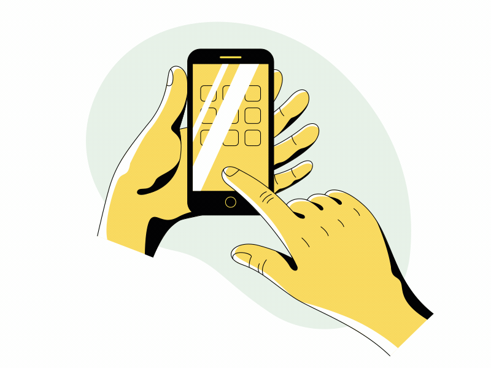

Exploring the Intersection of Smart Devices and the Internet of Things
‐By Sandhya.S
Exploring the Smart Devices
(Smartphones, Laptops, Smart TV's)

Smartphones and Tablets
Smartphones Censors (GPS, light conditions etc)
IoT Components in Smartphones
Features and applications of Smart TVs in the IoT ecosystem
- Video calling capabilities
- Content streaming and personalized recommendations
- Potential as control platforms for IoT devices
Speculative insights into the future of IoT and smart devices
- Enhanced data storage and processing capabilities in Smart TVs
- Integration of Smart TVs with home security and environmental control systems
- Potential for voice-activated interfaces and personalized recommendations